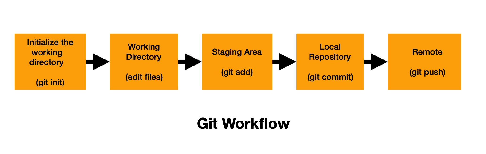
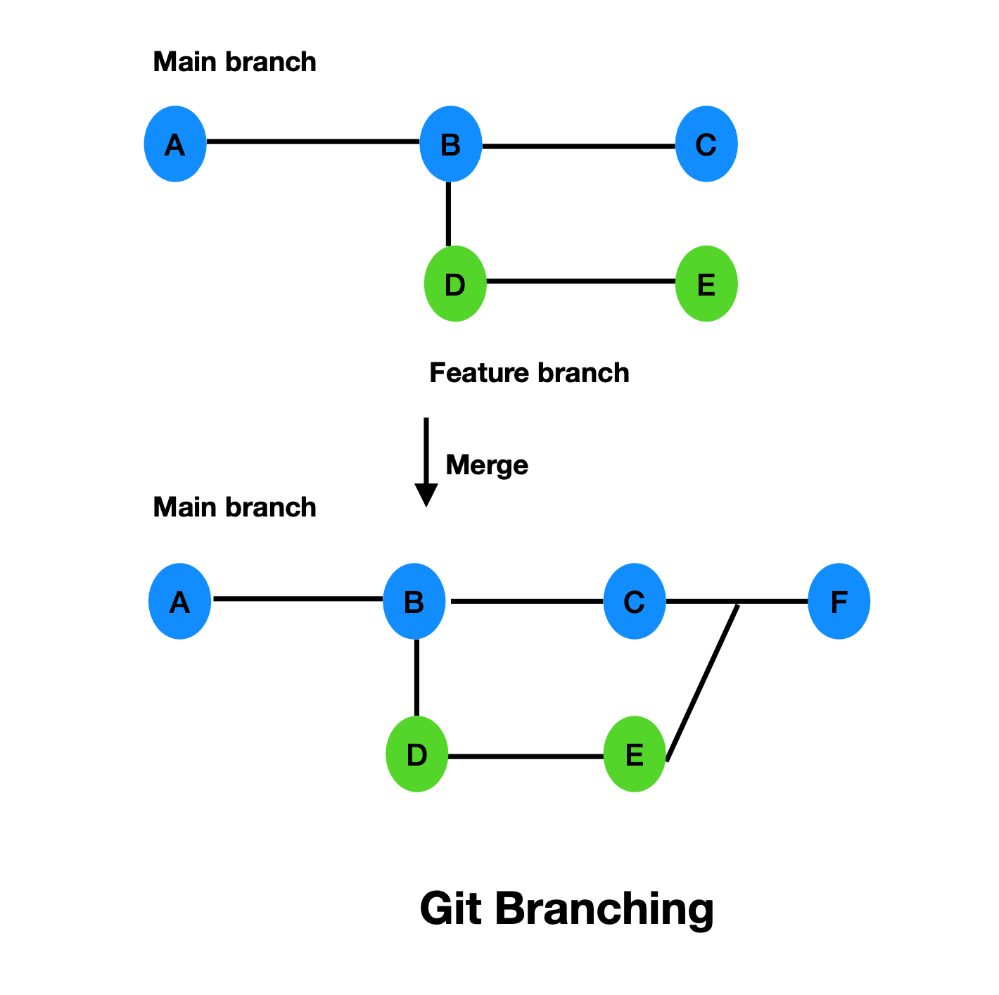

What is Git?
Here we will explore what Git is all about.
Git is a distributed version control system used to track changes in files and collaborate on software projects. It allows developers to maintain a complete history of their work and efficiently manage code changes.
Using Git, you can:
- Track changes to files.
- Collaborate with other developers.
- Revert to previous versions when needed.
- Maintain a complete history of your project.
- Manage both small and large projects efficiently
Git is free, open-source, and available on all major operating systems.
How it works?
The three states of Git
Git manages your files by moving them through three different areas on your local machine:
-
Working directory: This is the project folder where you make changes to your files. Files here are considered “modified” until they are staged.
-
Staged area : This is an intermediate area before changes are saved permanently in database.
-
Local repository(.git folder): This is the permanent database where Git stores your project's history. Git takes everything in the staging area and saves it as a permanent snapshot.
-
Snapshots: A snapshot is a saved version of your project at a specific point in time, like a photo of all your files.
-
Branching: Branching lets you create a separate workspace to develop features or fixes without affecting the main project.
-
Merging: Merging is the process of combining changes from one branch into another.
-
Hashes (SHA-1): A SHA-1 hash is a unique string that identifies each commit, helping track and verify changes.

The above diagram shows the Git workflow, where changes move from the working directory to the staging area and are saved as commits in the local repository. Each commit acts as a snapshot of the project and is identified by a unique SHA-1 hash. The final changes are pushed to remote repository like Github for collaboration.

Using the branching mechanism as shown above the developers can use branches to work on features independently without affecting the main codebase.
Git workflow and branching technique enables efficient version control, collaboration, and safe experimentation in modern software development.